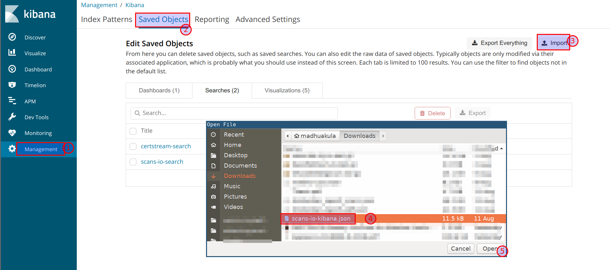
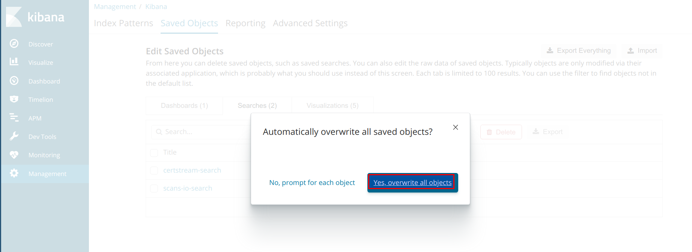
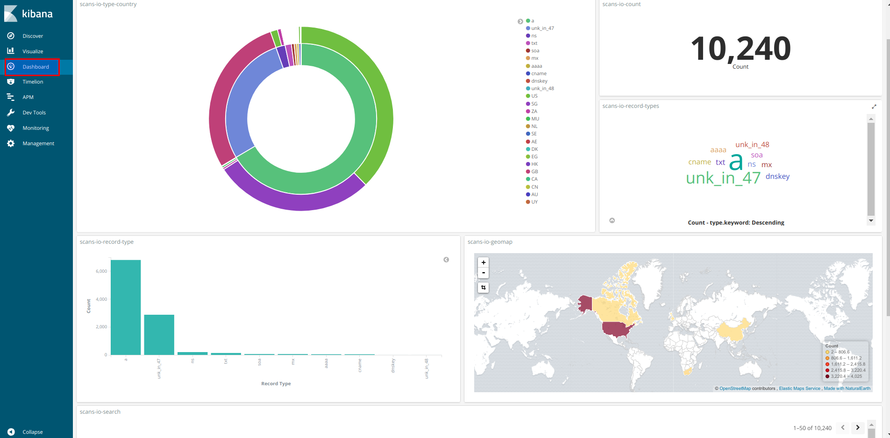

Monitoring and identifying subdomains
Filebeat configuration
Configuring the Filebeat to send JSON data to logstash
- Filebeat configuration has been done at
cat /etc/filebeat/filebeat.ymlto send logs to logstash. The JSON data is taken from/home/student/si/fdns_data_trimmed.json
filebeat.inputs:
- type: log
enabled: true
paths:
- /home/student/cs/cs.json
tags: ["certstream"]
- type: log
enabled: true
paths:
- /home/student/si/fdns_data_trimmed.json
tags: ["scansio"]
processors:
- decode_json_fields:
fields: ['message']
target: ""
output.logstash:
hosts: ["localhost:5044"]
Logstash configuration
Configuring logstash to recieve logs from filebeat and send to Elasticsearch
- scans.io logs filter configuration is at
cat /etc/logstash/conf.d/12-scansio-filter.conf. Currently we are applying geoip filter to enrich the IP address information.
filter {
if "scansio" in [tags] {
geoip {
source => "value"
}
}
}
Kibana configuration
Now we have the dataset for analysis. We will leverage the power of Kibana to visualise and represent the data.
- We can apply the filtered results by select only
scansiologs in Kibana

- Now we can select the required fields to view using the discover field options and we can save this search for later use

- We have already created a pre defined dashboards. We can import them using Management -> Saved Objects

- The imported dashboard will ask to overwrite the index. Select "Yes, overwrite all objects"

- Then select the
filebeatindex to overwrite the changes, as we store data in same index

- Finally, we can see the dashboard live in the dashboard section

- We can query the data using the apache lucence queries and the entire dashboard will reflect the data based on the query. For example look for only
name:*.icann.org

- This can be used to query and gather information from large amount of datasets in simpler way